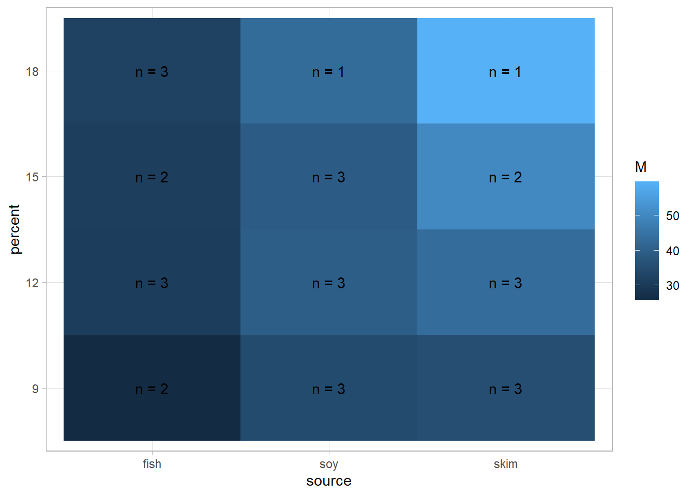

Chapter 9 Estimated Marginal Means
Estimated marginal means (EMMs) are the marginal means of the predicted values from a reference grid. Data set pigs shows the result of an observational study of the leucine concentration in 29 pigs whose diets differed in to attributes: source (fish, soy, milk) and protein percent (9, 12, 15, 18). The heat map below shows how concentration increase from left to right on the sources, and with higher percentages of protein.
data(pigs, package = "emmeans")
pigs <- pigs %>% mutate(percent = factor(percent))
pigs %>%
summarize(.by = c(source, percent), M = mean(conc), n = n()) %>%
ggplot(aes(x = source, y = percent, fill = M)) +
geom_tile() +
geom_text(aes(label = paste("n =", n)))
This data exhibits Simpson’s paradox: For each source, concentration increases with percent. Yet, they have different base levels and numbers of observations, so the marginal means actually decrease at percent 18. The culprit is the over-weighted fish at percent 18.
pigs %>%
summarize(.by = c(source, percent), M = mean(1/conc)) %>%
pivot_wider(names_from = percent, values_from = M)
## # A tibble: 3 × 5
## source `9` `12` `15` `18`
## <fct> <dbl> <dbl> <dbl> <dbl>
## 1 fish 0.0391 0.0324 0.0324 0.0310
## 2 soy 0.0292 0.0252 0.0255 0.0233
## 3 skim 0.0286 0.0233 0.0205 0.0167
pigs %>%
mutate(source = "Total") %>%
summarize(.by = c(source, percent), M = mean(1/conc)) %>%
pivot_wider(names_from = percent, values_from = M)
## # A tibble: 1 × 5
## source `9` `12` `15` `18`
## <chr> <dbl> <dbl> <dbl> <dbl>
## 1 Total 0.0315 0.0270 0.0260 0.0266# Fit a model
mdl <- linear_reg() %>% fit(inverse(conc) ~ ., data = pigs) %>% extract_fit_engine()
mdl %>% emmeans("percent")## percent emmean SE df lower.CL upper.CL
## 9 0.0322 0.001032 23 0.0301 0.0344
## 12 0.0270 0.000969 23 0.0250 0.0290
## 15 0.0263 0.001104 23 0.0240 0.0286
## 18 0.0241 0.001337 23 0.0213 0.0268
##
## Results are averaged over the levels of: source
## Results are given on the inverse (not the response) scale.
## Confidence level used: 0.95# Specifying `weights` brings you back to the ordinary marginal means.
mdl %>% emmeans("percent", weights = "cells")## percent emmean SE df lower.CL upper.CL
## 9 0.0315 0.001028 23 0.0293 0.0336
## 12 0.0270 0.000969 23 0.0250 0.0290
## 15 0.0260 0.001099 23 0.0238 0.0283
## 18 0.0266 0.001300 23 0.0239 0.0293
##
## Results are averaged over the levels of: source
## Results are given on the inverse (not the response) scale.
## Confidence level used: 0.95Today we’re talking about pigs.
This section is an overview of estimated marginal means, and its implementation in in the emmeans package.
## source percent conc
## 1 fish 9 27.8
## 2 fish 9 23.7
## 3 fish 12 31.5
## 4 fish 12 28.5
## 5 fish 12 32.8
## 6 fish 15 34.0
## 7 fish 15 28.3
## 8 fish 18 30.6
## 9 fish 18 32.7
## 10 fish 18 33.7
## 11 soy 9 39.3
## 12 soy 9 34.8
## 13 soy 9 29.8
## 14 soy 12 39.8
## 15 soy 12 40.0
## 16 soy 12 39.1
## 17 soy 15 38.5
## 18 soy 15 39.2
## 19 soy 15 40.0
## 20 soy 18 42.9
## 21 skim 9 40.6
## 22 skim 9 31.0
## 23 skim 9 34.6
## 24 skim 12 42.9
## 25 skim 12 50.1
## 26 skim 12 37.4
## 27 skim 15 59.5
## 28 skim 15 41.4
## 29 skim 18 59.89.1 References
This Very statisticious blog post is helpful. I also worked through the emmeans vignettes on CRAN.